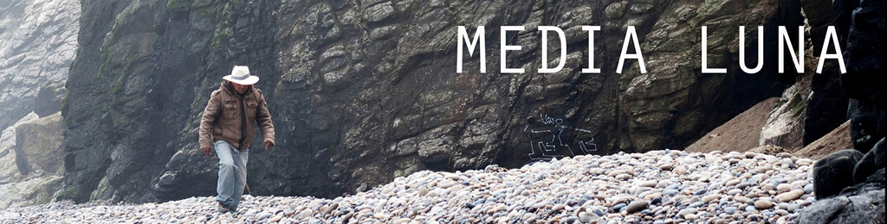
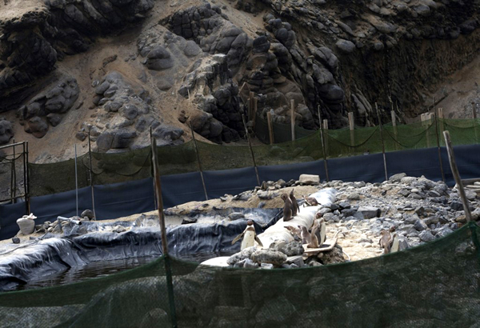
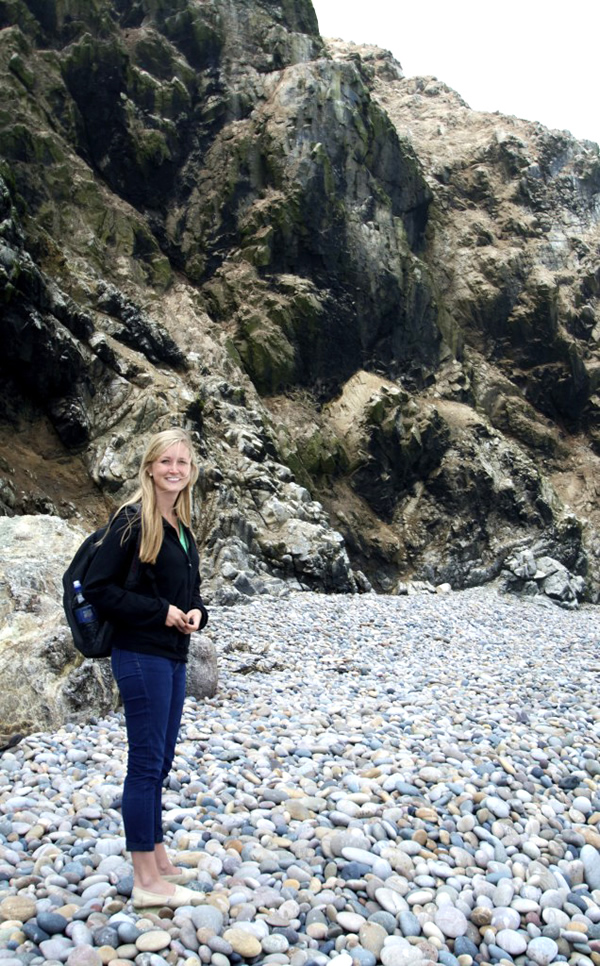
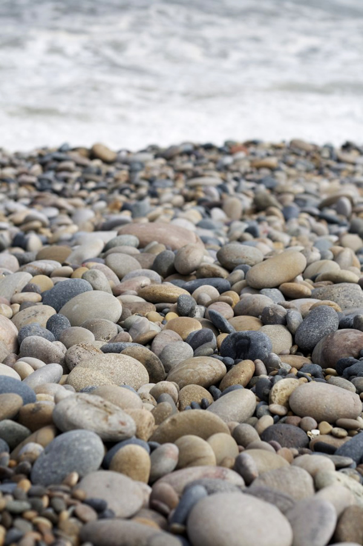
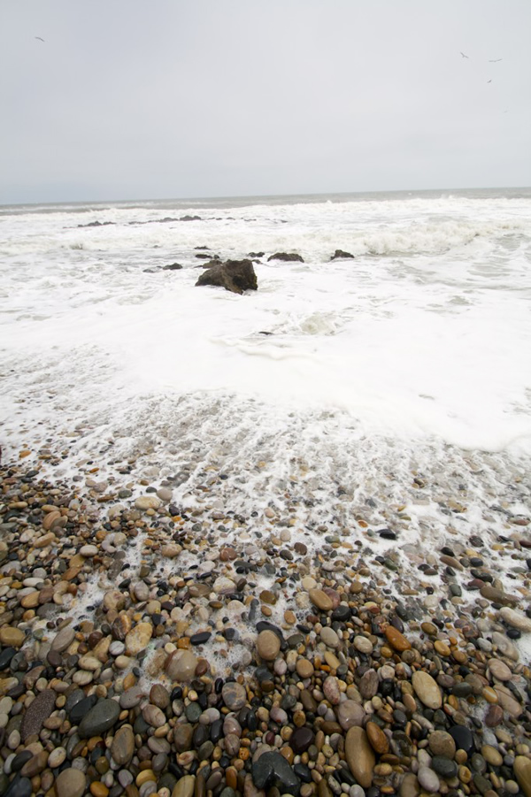
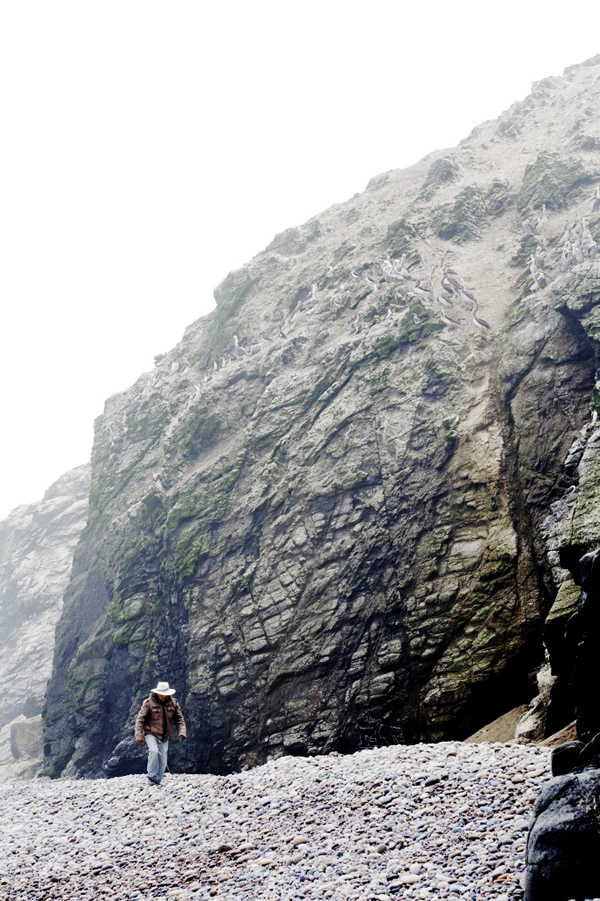

Penguins in Peru
Media Luna is a breathtaking beach that is just a hike away from the charming town of Puerto Eten. This beach used to house a native population of penguins before they migrated. Recently, an initiative has been taken to restore that population, and as part of the initiative, there are currently penguins living there. Though you cannot get close to them (they are behind a fence), you can see them if you look from above.
The beach itself does not have much sand, but thousands and thousands of stones that have been made smooth by the ocean water. The hike itself is quite an experience, as you feel as though you are in the middle of nowhere as you walk along the cliffs above the sea. Don’t miss out on this unique place– where else in Peru will you find penguins?

| The Hike |
| The hike is not one that many tourists know about, so we highly recommend hiring a guide. The path starts near the road that leads to Puerto Eten’s dock and the hike takes about 45 minutes to 1 hour each way– the perfect length! Parts of the hike will be close to the cliff, so be sure to keep small children close. All in all, Media Luna is WELL worth the effort involved to get there. This beach is unlike any other that you will find in Peru! |
| Time It Takes |
| From Puerto Eten, plan on it taking approximately 4 hours (2 hours hiking, 2 hours enjoying the beach). |
| Location |
| Located outside of the city of Puerto Eten, which is 13 miles (21 km) outside of Chiclayo. |



